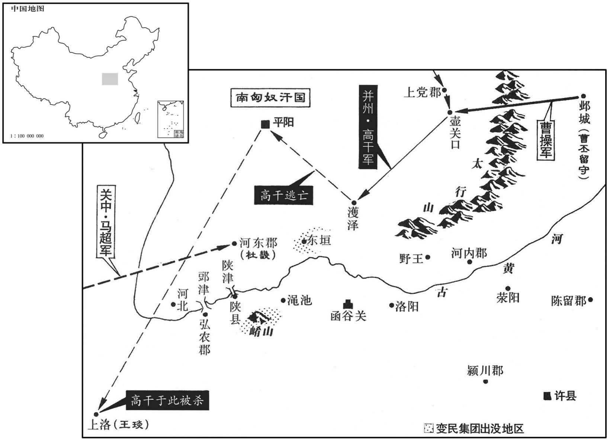

公元205年资治通鉴：本年记事、原文与白话对照
按原书编年位置阅读；追叙和史论不等于本年发生的事件。白话采用所据译本，缺译不以生成译文补齐。
卷64 · 本年记事
公元205年 · 汉孝献皇帝建安十年
十年〔（乙酉、二○五）〕
上传原文的注释括号有异常，字符原样保留；无法可靠划分的段落默认全文显示。
本年事件索引（现代整理）

本年形势与背景参考图
春，正月，曹操攻南皮，袁谭出战，士卒多死。操欲援之，议郎曹纯曰：「今县师深入，〔纯，仁之弟也。县，读曰悬。〕难以持久，若进不能克，退必丧威。」〔丧，息浪翻。〕乃自执桴鼓以率攻者，捊，音肤。〕遂克之。谭出走，追斩之。
春季，正月，曹操进攻南皮，袁谭率军出战，曹军伤亡惨重。曹操准备稍微减缓攻势，议郎曹纯说：“如今，咱们孤军深入，难以持久，如果进不能攻克敌城，一后退就会大损军威。”曹操于是亲自擂动战鼓，命令部下进攻，遂攻陷南皮。袁谭出逃，被曹军追上，杀死。
李孚自称冀州主簿，求见操曰：「今城中强弱相陵，人心扰乱，以为宜令新降为内所识信者宣传明教。」〔降，户江翻。〕操即使孚往入城，告瑜吏民，使各安故业，不得相侵，城中乃安。〔李孚，小才也，挟才以求知，非怀才以待聘者也。〕操于是斩郭图等及其妻子。〔郭图、审配各有党附，交鬬谭、尚，使寻干戈，以贻曹氏之驱除。谭、尚既败，二人亦诛，祸福之报为爽矣。〕
李孚自称冀州主簿。求见曹操，对曹操说：“现在城中秩序骚乱，百姓不分强弱，相互攻杀，人心惶惶。我认为，应当派遣新近归降而又为城内所认识信任的人去传达您的命令。”曹操立即派李孚入城，告诉城中官民，让他们各安故业，不得互相侵犯，城中才安定下来。曹操于是斩杀袁谭的谋士郭图等及其妻子儿女。
袁谭使王修运粮于乐安，闻谭急，将所领兵往赴之，至高密，闻谭死，下马号哭曰：「无君焉归！」〔号，户刀翻。焉，于虔翻。〕遂诣曹操，乞收葬谭尸，操许之，复使修还乐安，督军粮。谭所部诸城皆服，唯乐安太守管统不下。操命修取统首，〔使还运粮，就取统首也。〕修以统亡国忠臣，解其缚，使诣操，操悦而赦之，辟修为司空掾。
袁谭先派王到乐安去运输粮草，王听到袁谭情况危急，赶快率领部队前去援助，走到高密，听到袁谭的死讯，下马号哭说：“没有了主人，我到哪里去呢！”就去拜见曹操，请求让他收葬袁谭的尸体，曹操答应了，仍派王到乐安去督运军粮。当时，袁谭属下的各城都已归顺曹操，只有乐安郡太守管统未降。曹操命令王击斩管统统的人头。王认为管统是效忠故主的忠臣，捉住管统后，解开捆绑他的绳索，让他去拜见曹操。曹操大为高兴，赦免管统，并延聘王为司空掾。
郭嘉说操多辟青、冀、幽、并名士以为掾属，使人心归附，操从之。官渡之战，袁绍使陈琳为檄书，数操罪恶，连及家世，极其丑诋。及袁氏败，琳归操，操曰：「卿昔为本初移书，〔说，输芮翻；下同。数，所具翻。为，于伪翻；下同。〕但可罪状孤身，何乃上及父祖邪！」〔按文选，琳为绍檄豫州。盖帝都许，许属颍川郡，豫州部属也，故选专以檄豫州为言。琳檄略曰：「操祖父腾，与左悺、徐璜并作妖孽，饕餮放横，伤化害人。父嵩，乞伹携养，因臧买位，窃盗鼎司。操奸阉遗丑，僄狡锋侠，好乱乐祸。」又数其残贤害善，专制朝政，发掘坟陵之罪。文多不载。〕琳谢罪，操释之，使与陈留阮瑀俱管记室。〔汉公府有记室令史，主上章表报书记。〕
郭嘉劝说曹操多延聘青、冀、幽、并四州的名士作为属官，使人心归附，曹操采纳了他的意见。官渡之战前，袁绍命令陈琳撰写讨伐曹操的檄文，历数曹操的罪恶，并攻击曹家的祖先，极尽丑化诋毁之能事。等到袁绍失败后，陈琳投降曹操，曹操对他说：“你从前为袁结写檄文，只该攻击我本人，为什么要向上攻击到我的父亲、祖父？”陈琳谢罪，曹操便赦免他，派他与陈留人阮一同担任主管撰写奏章的记室。
先是渔阳王松据涿郡，〔先，悉荐翻。〕郡人刘放说松以地归操，操辟放参司空军事。〔为刘放因此管魏机密以乱魏张本。〕
先前，渔阳人王松占据涿郡，涿郡人刘放劝说王松以涿郡归降曹操，曹操延聘刘放参议司空府军务。
袁熙为其将焦触、张南所攻，与尚俱奔辽西乌桓。〔辽西乌桓，其酋曰蹋顿。〕触自号幽州刺史，驱率诸郡太守令长，背袁向曹，〔长，知两翻。背，蒲妹翻。〕陈兵数万，杀白马而盟，令曰：「敢违者斩！」众莫敢仰视，各以次歃。〔歃，色洽翻。〕别驾代郡韩珩曰：〔珩，音行。〕「吾受袁公父子厚恩，今其破亡，智不能救，勇不能死，于义阙矣；若乃北面曹氏，所不能为也。」一坐为珩失色。〔坐，徂卧翻。〕触曰：「夫举大事，当立大义，事之济否，不待一人，可卒珩志，以厉事君。」〔卒，子恤翻。〕乃舍之。触等遂降曹操，皆封为列侯。〔降，户江翻。〕
袁熙受到他自己部将焦触、张南的攻击，与袁尚一起投奔辽西郡的乌桓部落。焦触自称幽州刺史，胁迫所属各郡、县的长官，都背叛袁氏，归顺曹操。焦触等集结数万人的部队，杀死白马，歃血为盟，下令说：“有敢于违抗者，一律斩首。”众人在威逼之下，都不敢抬头，各自按顺序歃血盟誓。别驾、代郡人韩珩说：“我受到袁氏父子的厚恩，如今袁氏已经破亡，我的智谋不能拯救他们，又没有勇气去死节，于君臣大义已经有缺欠。如果再去归顺曹操，就更为失节，我不能作这样的事。”在场的人都被吓得变了颜色，生怕焦触会立刻杀死韩珩。焦触说：“发动大事，应立大义，事情的成败，不在乎一个人，我们可以成全韩珩的志愿，以勉励忠心事主的人。”于是，听任韩珩离去。焦触等就全部归降曹操，都被封为列侯。
夏，四月，黑山贼帅张燕率其众十余万降，〔帅，所类翻。〕封安国亭侯。
夏季，四月，黑山军首领张燕率领部下十余万人归降曹操，他被封安国亭侯。
故安赵犊、霍奴等杀幽州刺史及涿郡太守，三郡乌桓攻鲜于辅于犷平。〔三郡乌桓，辽西蹋顿、辽东苏仆延、右北平乌延也。犷平县，属渔阳郡。服虔曰：犷，音巩。师古曰：音九勇翻，又音骐。〕秋，八月，操讨犊等，斩之；乃渡潞水救犷平，乌桓走出塞。
故安人赵犊、霍奴等杀死幽州刺史和涿郡太守。辽西、辽东、右北平等三郡的乌桓部落进攻鲜于辅据守的犷平。秋季，八月，曹操大军讨伐赵犊等，杀死赵犊等人。于是，曹军又渡过潞水去援救犷平，乌桓部落退到塞外。
冬，十月，高干闻操讨乌桓，复以并州叛，〔复，扶又翻。〕执上党太守，举兵守壶关口。〔贤曰：潞州上党县有壶山口，因其险而置关焉。二汉志，壶关县，属上党郡。〕操遣其将乐进、李典击之。河内张晟，众万余人，寇崤、渑间，〔晟，成正翻。渑，弥兖翻。〕弘农张琰起兵以应之。
冬季，十月，驻守并州的高干听到曹操讨伐乌桓的消息，又背叛曹操，逮捕上党郡太守，派兵拒守壶关口。曹操派部将乐进、李典进击，河内人张晟聚集起一万余人，侵掠崤山、渑池一带，弘农人张琰起兵响应张晟。
河东太守王邑被征，〔被，皮义翻。〕郡掾卫固及中郎将范先等诣司隶校尉锺繇，请留之。〔掾，俞绢翻。〕繇不许。固等外以请邑为名，而内实与高干通谋。曹操谓荀彧曰：「关西诸将，外服内贰，张晟寇乱殽、渑，南通刘表，固等因之，将为深害。当今河东，天下之要地也，〔高干据并州，马腾、韩遂等据关中，往来交通，皆由河东，故曰要地。〕君为我举贤才以镇之。」〔为，于伪翻。〕彧曰：「西平太守京兆杜畿，〔汉末分金城置西平郡。〕勇足以当难，〔难，乃旦翻；下同。〕智足以应变。」操乃以畿为河东太守。锺繇促王邑交符，〔交郡符也。〕邑佩印绶，径从河忠诣许自归。〔河北县，属河东郡。宋白曰：陕州平陆县，本汉大阳县也，后汉改为河北县。〕
河东郡太守王邑受到朝廷征召，郡掾卫固与中郎将范先等去拜见司隶校尉钟繇，请求让王邑留任，钟繇未同意。卫固等表面上是请求挽留王邑，实际上却暗中与高干勾结。曹操对荀说：“函谷关以西的将领们，表面上服从朝廷，却怀有二心。张晟等侵犯崤山、渑池一带，向南与荆州的刘表联合，卫固等乘机起事，将会成为我们的心腹大患。现在河东郡是天下的冲要之地，你为我推荐一个贤能的人才，来镇守河东。”荀说：“西平郡太守、京兆人杜畿，他的勇气足以承当危难，智谋足以应付变化莫测的局势。”曹操就任命杜畿为河东郡太守。钟繇催促王邑办理移交，王邑却携带印绶，自己直接从河东郡属下的河北县去许都，向朝廷报到。
卫固等使兵数千人绝陕津，〔水经注：河水东过陕县北，河北对茅城，谓之茅津，亦谓之陕津。陕，式冉翻。〕杜畿至，数月不得渡，操遣夏侯惇讨固等，未至，畿曰：「河东有三万户，非皆欲为乱也。今兵迫之急，欲为善者无主，必惧而听于固。固等势专，〔【章：甲十一行本「专」下有「必以死战」四字；乙十一行本同；孔本同；张校同。】〕讨之不胜，为难未已；讨之而胜，是残一郡之民也。且固等未显绝王命，外以请故君为名，必不害新君，吾单车直往，出其不意，固为人多计而无断，〔断，丁乱翻。〕必伪受吾，吾得居郡一月，以计縻之，足矣。」遂诡道从郖津渡。〔水经注：河水东径湖县故城北，又东合柏谷水，又东右合门水。河水于此有郖津之名。郖，音窦。〕
卫固等派兵数千人切断黄河上的陕津渡口，杜畿到达河边，几个月不能渡过黄河。曹操派遣夏侯率军讨伐卫固等，还未开到，杜畿说：“河东郡有三万户百姓，并不是都想背叛朝廷。现在大军如果逼迫太急，想要顺从朝廷的人无人引导，必然因畏惧而听从卫固的指挥，卫固等人的势力会更加强大。大军讨伐不能取胜，就难于结束这场灾难；即使征伐得胜，也会使一郡的百姓都受到残害。而且卫固等人没有公开背叛朝廷，表面上以要求旧长官留任为理由，必然不会谋害新长官。我只乘一辆车直接去上任，出其不意，卫固为人谋略虽多，但缺乏决断，必然会假意接纳我。我只要能在郡中待一个月的时间，用计策稳住他，就足够了。”于是，杜畿绕道从津渡过黄河。
范先欲杀畿以威众，且观畿去就，于门下斩杀主簿以下三十余人，畿举动自若。于是固曰：「杀之无损，徒有恶名；且制之在我。」遂奉之。畿谓固、先曰：「卫、范，河东之望也，吾仰成而已。〔仰，牛向翻。〕然君臣有定义，成败同之，大事当共平议。」以固为都督，行丞事，领功曹；〔既以为都督，又令行郡丞事，又领功曹也。都督掌兵，丞贰太守，于郡事无所不关，功曹掌选署功劳，阳以郡权悉与之也。〕将校吏兵三千余人，皆范先督之。〔将，即亮翻。校，户教翻。〕固等喜，虽阳事畿，不以为意。固欲大发兵，畿患之，说固曰：「今大发兵，众情必扰，不如徐以赀募兵。」固以为然，从之，得兵甚少。〔以赀募兵，则郡计不足以继，故得兵甚少。〕畿又喻固等曰：「人情顾家，诸将掾史，可分遗休息，〔掾，于绢翻。〕急缓召之不难。」固等恶逆众心，〔恶，乌路翻。〕又从之。于是善人在外，阴为己援；恶人分散，各还其家。
范先想杀死杜畿，以威胁部众。后来决定先观察杜畿的态度，就在郡府的门前杀死主簿以下三十余人。杜畿毫不在乎，言谈举止都没有改变常态。因此，卫固说：“杀了他并没有好处，只会招来恶名，而且他是被控制在咱们手里。”于是，卫固等人就正式尊奉杜畿为河东郡的太守。杜畿对卫固、范先说：“你们卫家、范家，是河东郡的两大望族，我要仰仗你们来办事。然而咱们有长官、部属的确定名分，今后要有福共享，有难同担，遇到大事要共同商量。”杜畿委任卫固为都督，代理郡丞的职务，又兼任功曹；全郡的大小将领及兵士有三千多人，都由范先指挥。卫固等心中大喜，虽然表面上服从杜畿，实际上没把他当回事。卫固要大举征发全郡百姓当兵，杜畿担心这样会使他的力量大为增长，就对卫固说：“如今要是大量征发百姓，会使民心骚动，不如采用募兵的方式慢慢来。”卫固认为有理，同意杜畿的方法，但募到的士兵很少。杜畿又对卫固说：“顾念家庭，是人之常情，各级将领和郡中文职官吏，可以让他们轮流休息，到情况需要时，再征召他们，也不困难。”卫固等不愿因拒绝杜畿的建议而招来众人的怨恨，也同意了。这样，善人在外边可以暗中相助，而与卫固等同谋的恶人都各自回家。
会白骑攻东垣，〔白骑，张白骑之众相聚为贼者也。垣县，属河东郡，「东」字衍。续汉志，垣县，注云：山在东，状如垣。盖此时已有东垣之名。骑，奇寄翻。〕高干入濩泽。〔濩泽县，属河东郡。贤曰：今泽州县。师古曰：濩，音乌号翻。〕畿知诸县附己，乃出，单将数十骑，赴坚壁而守之，〔将，即亮翻。坚壁，壁垒之最坚者。〕吏民多举城助畿者，〔举城，谓举属县城也。〕比数十日，〔比，必寐翻。〕得四千余人。固等与高干、张晟共攻畿，不下，略诸县，无所得。曹操使议郎张既西征关中诸将马腾等，皆引兵会击晟等，破之，斩固、琰等首，其余党与皆赦之。
正在这时，有一股号称白骑的武装力量进攻东垣，高干也率军进入泽。杜畿知道诸县都已归附自己，就离开郡城，只身率领数十名骑兵，选择一个坚固的营寨进行防守。属下各县的官吏与百姓都纷纷占据城池，援助杜畿。到几十天后，杜畿已有四千多人。卫固与高干、张晟合兵进攻杜畿据守的营寨，未能攻下；又去周围各县抢掠粮草，也没有收获。曹操派议郎张既西得，去关中征调马腾等将领平定叛乱，他们都出兵联合进攻张晟等，大获全胜，斩杀卫固、张琰等人，赦免了其余的党羽。
于是杜畿治河东，务崇宽惠。〔治，直之翻。〕民有辞讼，畿为陈义理，遣归谛思之，〔为，于伪翻。谛，可计翻；审也。〕父老皆自相责怒，不敢讼；劝耕桑，课畜牧，百姓家家丰实；然后兴学校，〔校，户教翻。〕举孝弟，〔弟，读曰悌。〕修戎事，讲武备，河东遂安。畿在河东十六年，常为天下最。〔为曹操因河东资实以平关中张本。杜畿之子为杜恕，恕之子为杜预。其守河东，观其方略，固未易才也。余窃谓杜氏仕于魏、晋，累世贵盛，必有家传，史因而书之，固有过其实者。〕
从此，杜畿治理河东郡，以宽大为主，广施仁惠。百姓有来打官司的，杜畿为他们讲解仁义道德，分析事理，让他们回去好好考虑。父老们都自相责备，不敢再去告状。杜畿劝勉百姓努力耕田，种桑养蚕，鼓励他们饲养牲畜，使得家家都富裕起来。然后，又兴建学堂，推举孝顺父母、友爱兄弟的人；修造城防，制作武器，加强作战训练；河东郡便安定下来。杜畿在河东郡任职十六年，政绩常常为天下第一。
秘书监、侍中荀悦〔桓帝延熹二年，置秘书监，秩六百石。〕作申鉴五篇，奏之。悦，爽之兄子也。时政在曹氏，天子恭己，言恭己南面而巳，政事无所预也。孔子曰：无为而治者，其舜也欤！夫何为哉，恭己正南面而巳。后世遂以政在强臣、己无所预为恭己。舜之恭己，果如是哉！〕悦志在献替，〔献可替否。〕而谋无所用，故作是书。其大略曰：「为政之术，先屏四患，〔屏，必郢翻。〕乃崇五政。伪乱俗，私坏法，放越轨，者败制：〔坏，音怪。败，补迈翻。〕四者不除，则政末由行矣，是谓四患。兴农桑以养其生，审好恶以正其俗，〔好，呼到翻。恶，乌路翻。〕宣文教以章其化，立武备以秉其威，明赏罚以统其法，是谓五政。人不畏死，不可惧以罪；人不乐生，不可劝以善。故在上者，先丰民财以定其志，是谓养生。〔此说，万世不可易也。乐，音洛。〕善恶要乎功罪，毁誉效于准验，〔书云：无稽之言勿听。〕听言责事，举名察实，无或诈伪以荡众心。〔荡，谓动之也。以诈伪动之，则人之心亦必动于诈伪，以应其上。〕故俗无奸怪，民无淫风，是谓正俗。荣辱者，赏罚之精华也，故礼教荣辱以加君子，化其情也；桎梏鞭扑以加小人，化其形也。〔桎，之日翻。梏，工沃翻。扑，普卜翻。〕若教化之废，推中人而坠于小人之域，〔推，吐雷翻。〕教化之行，引中人而纳于君子之涂，是谓章化。在上者必有武备以戒不虞，安居则寄之内政，〔国语：管仲相齐桓公，作内政以寄军令。〕有事则用之军旅，是谓秉威。赏罚，政之柄也。人主不亡赏，非爱其财也，赏妄行，则善不劝矣；不妄罚，非矜其人也，罚妄行，则恶不惩矣。赏不劝，谓之止善，罚不惩，谓之纵恶。在上者能不止下为善，不纵下为恶，则国法立矣。是谓统法。四患既独，〔【章：甲十一行本「独」作「蠲」；乙十一行本同；熊校同。」五政又立，行之以诚，守之以固，简而感，疏而不失，垂拱揖让，而海内平矣。」〔荀悦申鉴，其立论精切，关于国家兴亡之大致，过于彧、攸；至于揣摩天下之势，应敌设变，以制一时之胜，悦未必能也。曹操奸雄，亲信彧、攸，而悦乃在天子左右。悦非比于彧、攸，而操不之忌，盖知悦但能持论，其才必不能办也。呜呼！东都之季，荀淑以名德称，而彧、攸以智略济，荀悦盖得其祖父之彷佛耳！其才不足以用世，其言仅见于此书。后之有天下国家者，尚论其世，深味其言，则知悦之忠于汉室，而有补于天下国家也。蠲，吉玄翻。】〕
两版字句有差异，建议核对原文。
秘书监、侍中荀悦，撰写《申鉴》五篇，上奏给献帝。荀悦是荀爽哥哥的儿子。当时，政权掌握在曹操手中，献帝只是表面上的最高统治者，荀悦有志为朝廷贡献自己的才干，但他的谋略都无处施展，所以著述此书。书中的主要内容是：“治理天下的办法，首先是消灭‘四患’，然后要推行‘五致’。以虚伪败坏风谷。用私心破坏法纪，行为放荡而超越正常规定，奢侈靡费而损坏国家制度，不消灭这四种现象，就无法推行政令，所以称之为‘四患’。振兴农业与桑蚕业，以保障百姓生活；分辨善恶，以纠正民间习俗；推行文化教育，以改善社会风气；建立武备，以维持朝廷的威严；赏罚分明，以统一法令，这就是‘五政’。百姓不怕死，就不要以刑罚来恐吓他们；百姓没有生趣，就不可能劝导他们向善。所以，身居高位的人，要先使百姓富足起来。使他人安居乐业，这就是保障民生。对于善、恶，要以功、罪为标准来判定；对于毁谤与赞誉，要用实际效果来进行检验。对人不仅要听他的言论，更要观察他的行为；不被他的名声所困扰，要考察他是否名实相符；不能让虚伪狡诈的人得逞，免得人们去纷纷仿效。因此，没有奸怪的习俗，民间没有淫乱之风，这就是纠正民俗。奖励与羞辱是赏赐、惩罚的核心，所以礼教规定，荣誉与羞辱只能施加于君子，以改变他们的内心；枷锁与鞭笞则专用来对付小人，以改变他们的行为。如果不推行教化，就会使中等资质的人也堕落成小人；而推行教化，就能使这些中等资质的人升为君子；这就是改善社会风气。作为统治者，必然要拥有军队，以防备不能预料的变化，平时用来管理内政，战时则效命疆场，这就是维持威严。赏赐与惩罚，是执政的权柄。君王不随意赏赐，并不是爱息财物，而是因为，随意赏赐，就不能用赏赐来劝导人们行善；君王五不随意惩罚，并不是姑息怜悯，而是因为，随意惩罚，就不能使惩罚来打击犯罪。赏赐而没有起到劝导的作用，就是阻止人们行善；惩罚而没有起倒打击的作用，就是纵容人们作恶。作为统治者，能够不阻止下面的人行善，不纵容下面的人作恶，则国法确立，这就是统一法令。除去了‘四患’，又建立了‘五政’，诚心诚意地执行，长期坚持，简要而不懈怠，疏阔而不遗漏。这样，不需劳神费心，天下就能太平了